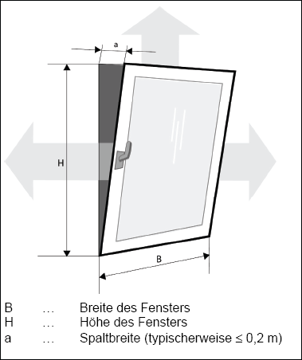

Raumtiefe (t) = 5 m
Raumbreite (b) = 4 m
Raumhöhe (h) = 2,50 m
Grundfläche (t x b) = 20 m2
Raumvolumen (t x b x h) = 50 m3
Der Nachweis der Einhaltung der maximal zulässigen Raumtiefe erfolgt nach Tabelle 3. Bei der Raumhöhe von 2,50 m wird die maximal zulässige Raumtiefe von 6,25 m (2,5 x h = 6,25 m) für System I und 12,50 m (5 x h = 12,50 m) für System II unterschritten. System I und II sind geeignet, den Raum zu belüften.

Abb. 1: Gekipptes Fenster
Die Berechnung der Öffnungsflächen bei kontinuierlicher Lüftung bezieht sich auf die Personenbelegung des Raumes. Die Öffnungsfläche für ein gekipptes Fenster ergibt sich aus:
AKipp = B x a + 2 x (H x a)/2 = a x (B + H)
Für ein Kippfenster mit den Maßen B = 1,00 m, H = 1,20 m und a = 0,11 m ergibt sich:
AKipp = 0,242 m2
Nach Tabelle 3 sind für die kontinuierliche Lüftung folgende Flächen erforderlich. Sie sind die Summe aus Zuluft- und Abluftflächen (Türen und Tore bleiben unberücksichtigt).
Tabelle 4: Zuluft- und Abluftflächen für Fenster bei kontinuierlicher Lüftung
| System | erforderliche Fensterfläche [m2/anwesende Person] | erforderliche Fensterfläche bei 2 Personen [m2] | erforderliche Anzahl Fenster |
| I Einseitige Lüftung | 0,35 | 0,70 | 3 |
| II Querlüftung | 0,20 | 0,40 | 2 |
Die Berechnung der Öffnungsflächen bei Stoßlüftung bezieht sich auf die Grundfläche des Raumes.
Die Öffnungsfläche für ein gedreht geöffnetes Fenster ergibt sich aus:
ADreh = B x H = 1,20 m2
Bei einseitiger Lüftung (System I) ergibt sich nach Tabelle 3 für die Stoßlüftung eines 20 m2-Raumes eine erforderliche Öffnungsfläche von ADreh = 2,1 m2, d. h. 2 Fenster (2,40 m2) reichen für die Stoßlüftung aus.
Bei Querlüftung (System II) ist eine Öffnungsfläche von insgesamt (Summe aus Zuluft- und Abluftflächen) ADreh = 1,2 m2 nötig, d. h. es sind je ADreh = 0,6 m2 in gegenüberliegenden Wänden erforderlich. Die zur Verfügung stehende Fläche von 1,2 m2 je Fenster reicht demnach für die Stoßlüftung aus.